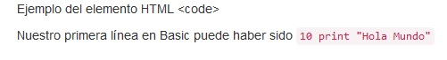
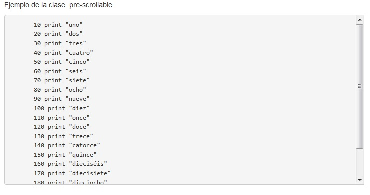

Veamos ahora otros elementos HTML que Bootstrap redefine el estilo por defecto para mostrar trozos de código fuente.
<code>
Cuando queremos enfatizar un trozo de código de programación en una línea empleamos el elemento <code>:
<!DOCTYPE html>
<html>
<head>
<title>Prueba de Bootstrap</title>
<link href="css/bootstrap.min.css" rel="stylesheet">
<meta name="viewport" content="width=device-width, initial-scale=1">
</head>
<body>
<div class="container">
<p>Ejemplo del elemento HTML code</p>
<p>Nuestro primera línea en Basic puede haber sido <code>10 print "Hola Mundo"</code></p>
</div>
</body>
</html>
En el navegador tenemos la siguiente representación:
<pre>
Para definir bloques de código utilizamos el elemento HTML pre, Bootstrap define un estilo particular:
<!DOCTYPE html>
<html>
<head>
<title>Prueba de Bootstrap</title>
<link href="css/bootstrap.min.css" rel="stylesheet">
<meta name="viewport" content="width=device-width, initial-scale=1">
</head>
<body>
<div class="container">
<p>Ejemplo del elemento HTML pre</p>
<pre>
10 print "hola mundo"
20 goto 10
</pre>
</div>
</body>
</html>
En el navegador tenemos la siguiente representación:

Clase .pre-scrollable para el elemento <pre>
Si necesitamos que no se vea todo el código dentro del elemento <pre> podemos inicializarlo con la clase .pre-scrollable esto hace que el alto máximo sea de 340px y muestre una barra de scroll vertical.
Como ejemplo podemos observar esta página:
<!DOCTYPE html>
<html>
<head>
<title>Prueba de Bootstrap</title>
<link href="css/bootstrap.min.css" rel="stylesheet">
<meta name="viewport" content="width=device-width, initial-scale=1">
</head>
<body>
<div class="container">
<p>Ejemplo de la clase .pre-scrollable</p>
<pre class="pre-scrollable">
10 print "uno"
20 print "dos"
30 print "tres"
40 print "cuatro"
50 print "cinco"
60 print "seis"
70 print "siete"
80 print "ocho"
90 print "nueve"
100 print "diez"
110 print "once"
120 print "doce"
130 print "trece"
140 print "catorce"
150 print "quince"
160 print "dieciséis"
170 print "diecisiete"
180 print "dieciocho"
190 print "diecinueve"
200 print "veinte"
</pre>
</div>
</body>
</html>
En el navegador tenemos la siguiente representación del bloque de código con la barra lateral de scroll:
